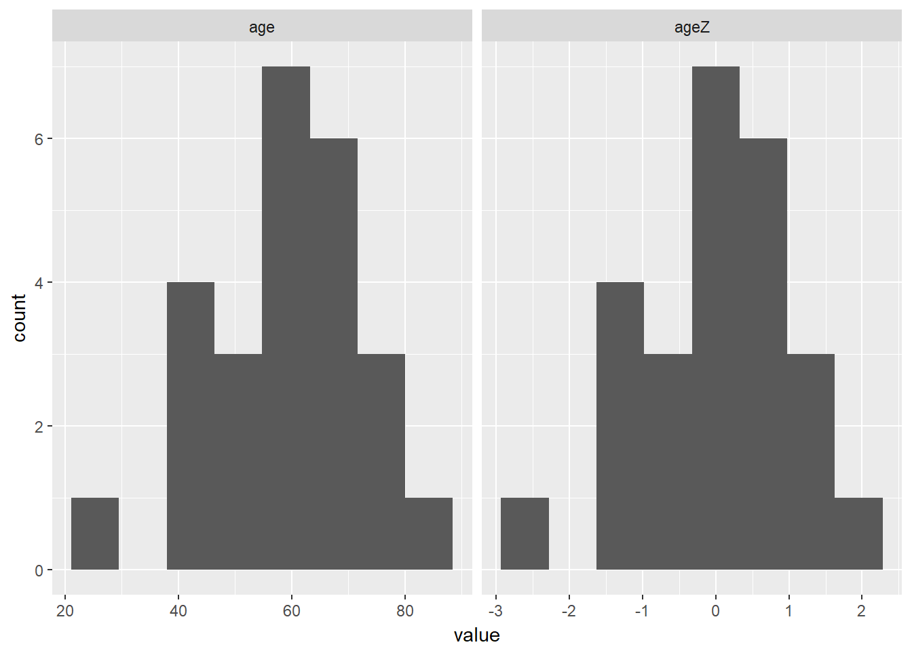

Chapter 4 STANDARDIZING SCORES
Chapter Links
Assignment Links
Required Packages
library(tidyverse) # Loads several very helpful 'tidy' packages
library(haven) # Read in SPSS datasets
library(furniture) # Nice tables (by our own Tyson Barrett)Example: Cancer Experiment
The Cancer dataset was introduced in chapter 3.
4.1 Standardize Variables - Manually
You can manually create a stadradized version of the age variable.
First, you must find the mean and standard deviation of the age variable.
cancer_clean %>%
furniture::table1(age)
-----------------------
Mean/Count (SD/%)
n = 25
age
59.6 (12.9)
-----------------------Second, write an equation to do the calculation.
cancer_clean %>%
dplyr::mutate(agez = (age - 59.6) / 12.9) %>%
dplyr::select(id, trt, age, agez)# A tibble: 25 x 4
id trt age agez
<fct> <fct> <dbl> <dbl>
1 1 Placebo 52.0 -0.589
2 5 Placebo 77.0 1.35
3 6 Placebo 60.0 0.0310
4 9 Placebo 61.0 0.109
5 11 Placebo 59.0 -0.0465
6 15 Placebo 69.0 0.729
7 21 Placebo 67.0 0.574
8 26 Placebo 56.0 -0.279
9 31 Placebo 61.0 0.109
10 35 Placebo 51.0 -0.667
# ... with 15 more rows4.2 Standardize Variables - with the scale() funciton
A quicker way is to use a funciton. Notice the differences due to rounding.
cancer_new <- cancer_clean %>%
dplyr::mutate(agez = (age - 59.6) / 12.9) %>%
dplyr::mutate(ageZ = scale(age))%>%
dplyr::select(id, trt, age, agez, ageZ)
cancer_new# A tibble: 25 x 5
id trt age agez ageZ
<fct> <fct> <dbl> <dbl> <dbl>
1 1 Placebo 52.0 -0.589 -0.591
2 5 Placebo 77.0 1.35 1.34
3 6 Placebo 60.0 0.0310 0.0278
4 9 Placebo 61.0 0.109 0.105
5 11 Placebo 59.0 -0.0465 -0.0495
6 15 Placebo 69.0 0.729 0.724
7 21 Placebo 67.0 0.574 0.569
8 26 Placebo 56.0 -0.279 -0.281
9 31 Placebo 61.0 0.109 0.105
10 35 Placebo 51.0 -0.667 -0.668
# ... with 15 more rowsYou can check that the new variable does in deed have mean of zero and spread of one.
cancer_new %>%
furniture::table1(age, agez, ageZ,
digits = 8)
--------------------------------
Mean/Count (SD/%)
n = 25
age
59.64000000 (12.93213053)
agez
0.00310078 (1.00249074)
ageZ
-0.00000000 (1.00000000)
--------------------------------Both the mean and the standard deviation are different.
cancer_new %>%
tidyr::gather(key = "variable",
value = "value",
age, ageZ) %>%
ggplot(aes(value)) +
geom_histogram(bins = 8) +
facet_grid(. ~ variable)
However, if you let the scale of the x-axis change, you see the shape of the two variables is identical.
cancer_new %>%
tidyr::gather(key = "variable",
value = "value",
age, ageZ) %>%
ggplot(aes(value)) +
geom_histogram(bins = 8) +
facet_grid(. ~ variable, scale = "free_x")